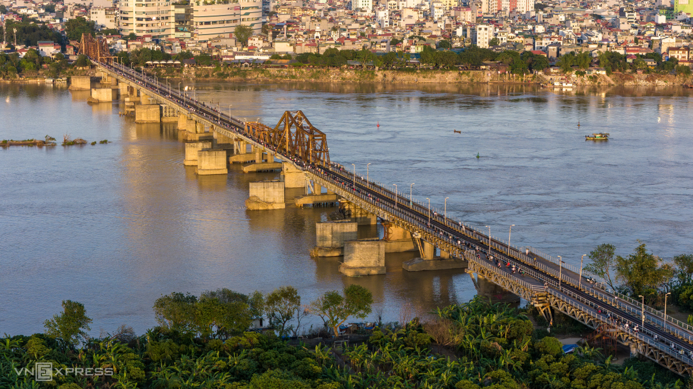
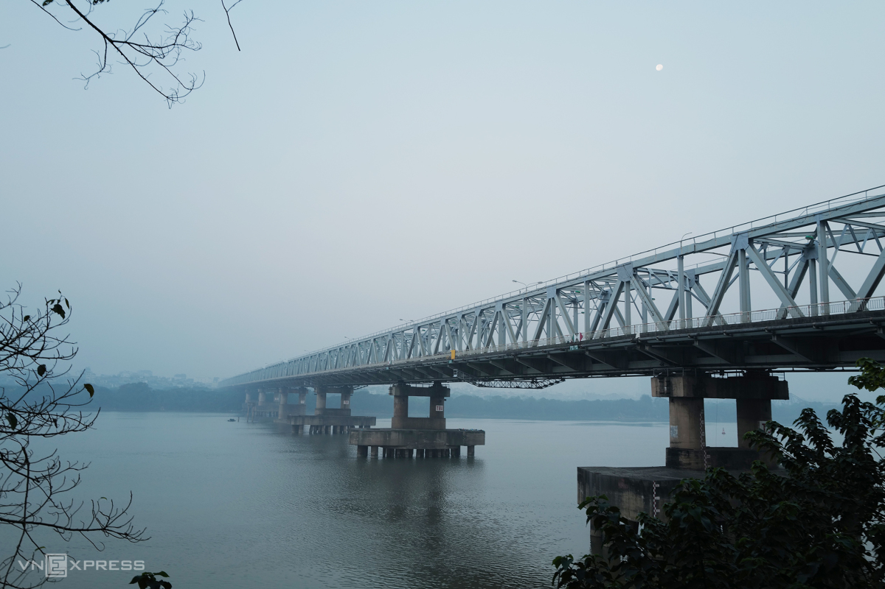
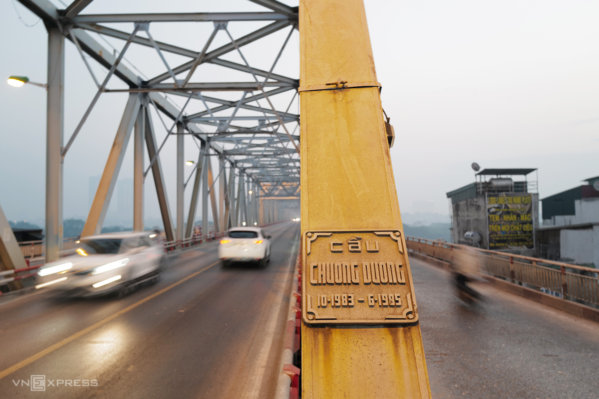
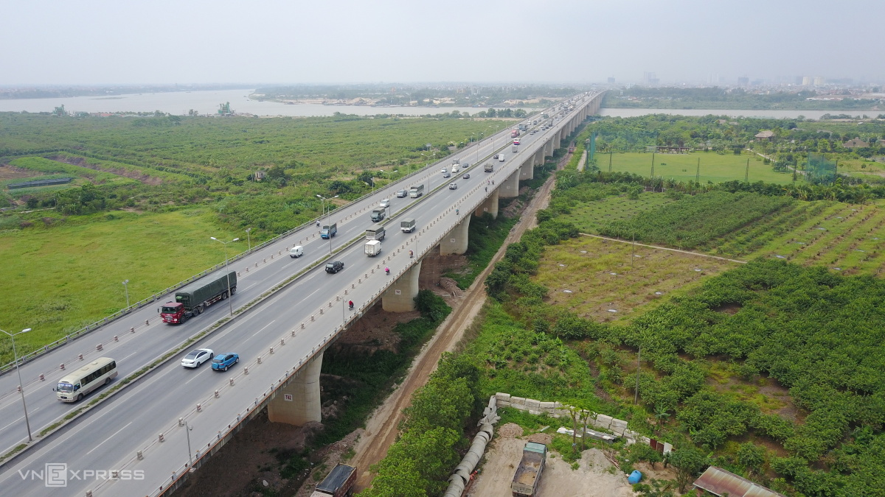
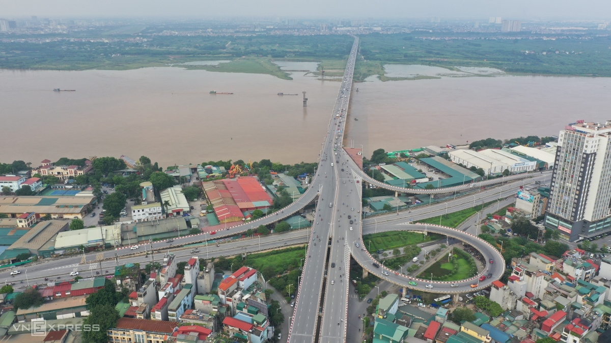
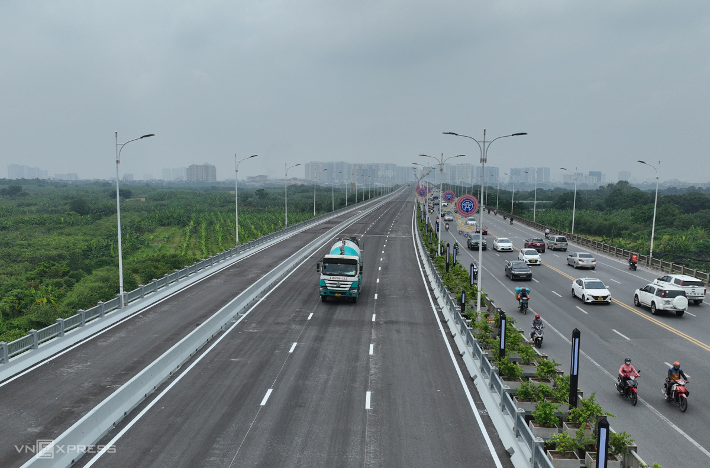
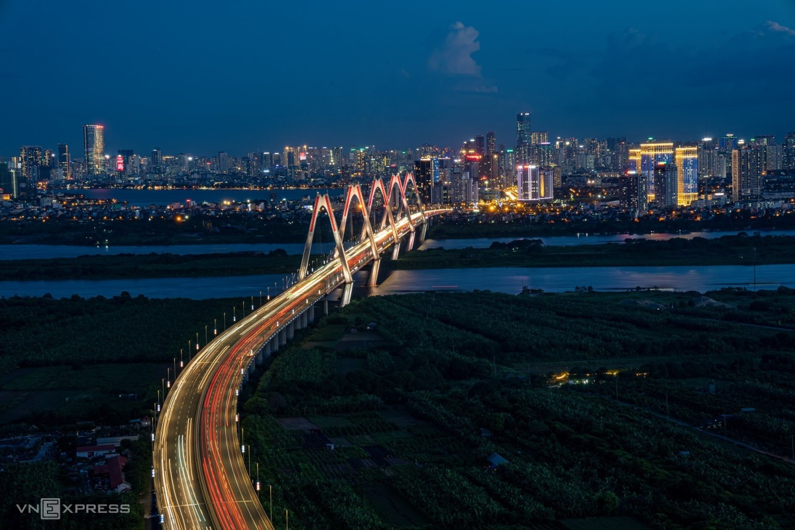
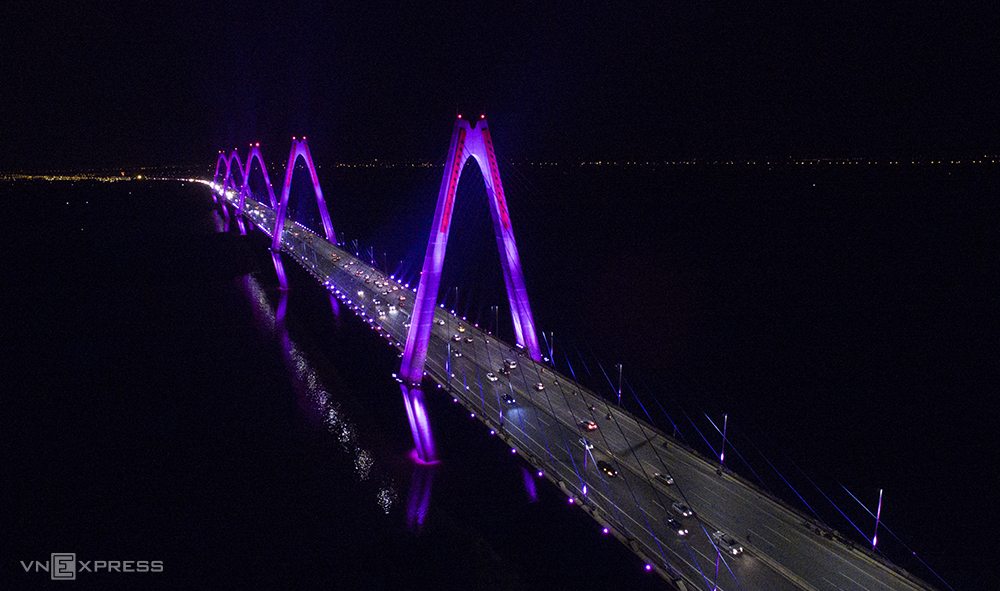

Some iconic bridges revitalize Hanoi
In addition to the Long Bien Bridge built during the French colonial period, Hanoi has constructed more bridges over the Red River after the war, connecting districts and neighboring provinces, contributing to the capital's socio-economic development.

The Red River runs through Hanoi for 163 km, making up about one-third of its length within Vietnamese territory.
Prior to 1954, the Long Bien Bridge, built by the French in 1898 and inaugurated in 1902, was the only structure connecting the river's two banks.
The Long Bien Bridge spans 2,290 meters, with an additional 896 meters of approaching roads. It consists of 19 steel spans supported by 20 pillars, each over 40 meters high, including foundations, and features stone-built approach roads.
The bridge has a central railway track, flanked by motorized traffic lanes and pedestrian paths. The vehicle lanes are 2.6 meters wide, while the pedestrian paths are 0.4 meters wide.

Construction of the Chuong Duong Bridge began in 1983 and was completed in 1985, connecting Hoan Kiem and Long Bien districts. It was the first major bridge entirely designed and built by Vietnamese engineers.

The engineers repurposed some steel beams and girders from the Thang Long Bridge to construct the Chuong Duong Bridge, which consists of 21 steel spans.
The bridge spans 1.2 km in length and is 19.5 meters wide, featuring four traffic lanes—two central lanes for cars and two side lanes for motorcycles.

Construction of the Thanh Tri Bridge began in 2002, and it was put into use in 2006. The bridge features six traffic lanes, a width of over 33 meters, and a length of 3 km. At the time of its completion, Thanh Tri was the longest and widest pre-stressed reinforced concrete bridge in Vietnam. Along with the Nhat Tan Bridge, it is one of two Red River bridges constructed using Japanese ODA loans.

Connecting Hai Ba Trung and Long Bien districts, the Vinh Tuy Bridge began construction in 2005, with phase 1 inaugurated in 2010. The bridge spans 3.7 km and has a cross-sectional width of 19.25 meters in its first phase, featuring eight lanes and a pre-stressed reinforced concrete box girder structure.

Phase 2 of the Vinh Tuy Bridge was opened in 2023, easing traffic congestion on the Chuong Duong Bridge. This phase was constructed using cantilever casting technology, achieving a record cantilever span of 135 meters, surpassing the 130-meter span of Thanh Tri Bridge.

The Nhat Tan Bridge, featuring eight lanes, began construction in March 2009 and was inaugurated in January 2015. It is the longest cable-stayed bridge in Vietnam, spanning 3.9 km and connecting Dong Anh District to Tay Ho District.

The Nhat Tan Bridge consists of six cable-stayed spans supported by five diamond-shaped towers, symbolizing Hanoi's five ancient gates. Unlike typical cable-stayed bridges, which usually have two towers and three spans, Nhat Tan is equipped with a dynamic lighting system that can change colors across the five towers or adapt to specific days and occasions.